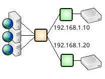

Query routing sends queries that match one pattern to one set of database servers and queries that match another pattern to another set of servers. A comon use for query routing is to route DML and DDL queries to a master and distribute select queries over a pool of slaves.
Session routing sends entire sessions to one database or another; by user, by intercepting "use database" queries, by client ip address, or by other criteria.
 |
A complete descripton of query and session routing with example configuration files is given here.